22 Large Language Models
Large Language Models (LLMs) are decoder-heavy Transformers (Figure 21.8) trained on massive text corpora. The architecture’s three properties make it uniquely suited to scaling:
- Attention to the whole input (long-range dependencies): every self-attention layer lets each token attend to all other tokens, regardless of distance.
- Parallel processing: unlike RNNs, all positions in both the attention and feed-forward layers are processed simultaneously — across heads, layers, and sequence positions — fully exploiting GPU/TPU matrix-multiplication throughput.
- Scale efficiently: empirical power laws relate test loss to model size, dataset size, and compute (Section 22.3.3). Capacity scales by adding layers, heads, or widening matrices (handled across devices via model sharding); dataset size scales via larger batches over a fixed context window, processed with distributed data parallelism.
This chapter covers the architectural refinements that turn the 2017 Transformer into a modern LLM, the end-to-end training/deployment lifecycle, and the major techniques for fine-tuning, alignment, and compression.
22.1 Decoder Architecture Improvements
Modern decoder-only LLMs (GPT, LLaMA, Mistral, …) modify the original Transformer decoder in several ways, each targeting a specific bottleneck in training stability, context length, or inference cost.
22.1.1 Rotary Position Embeddings (RoPE)
Absolute positional embeddings (learned or sinusoidal, Section 21.2.1) are added once at the input and generalize poorly to sequences longer than those seen in training. RoPE instead encodes position by rotating each pair of query/key dimensions by an angle proportional to the token’s absolute position, applied at every attention layer (not just the input):
\[f(x_m, m)_{(2i,2i+1)} = \begin{pmatrix}\cos m\theta_i & -\sin m\theta_i \\ \sin m\theta_i & \cos m\theta_i\end{pmatrix}\begin{pmatrix}x_m^{(2i)}\\x_m^{(2i+1)}\end{pmatrix}, \qquad \theta_i = 10000^{-2i/d}\]
i.e., a block-diagonal rotation matrix \(R_{\Theta,m}^d\) applied to the query/key vector at position \(m\). The key property: \(\langle R_{\Theta,m}^d q,\ R_{\Theta,n}^d k\rangle\) depends only on the relative position \(m-n\), not on \(m\) and \(n\) individually — the dot product naturally encodes relative distance, and the same rotation formula extrapolates (to varying degrees) beyond the training context length.
22.1.2 Pre-Norm and RMSNorm
The original Transformer applies layer normalization after each sub-layer’s residual sum (post-norm): \(x_{l+1} = \text{LN}\big(x_l + \text{Sublayer}(x_l)\big)\). Deep stacks trained this way are unstable, because gradients must pass through the normalization on the residual path itself. Modern LLMs use pre-norm: \(x_{l+1} = x_l + \text{Sublayer}\big(\text{LN}(x_l)\big)\) — the residual stream itself is never normalized, giving an unobstructed identity path for gradients and allowing much deeper networks to train stably.
Why LayerNorm rather than BatchNorm? Three reasons compound: (1) sequences in a batch have variable length, making per-feature statistics across the batch dimension ill-defined without heavy padding-aware masking; (2) memory constraints often force small per-device batch sizes, making batch statistics noisy; (3) in a causal language model, batch statistics computed over a batch that includes future tokens would leak information about the sequence the model is trying to predict.
RMSNorm is a cheaper variant used in most modern LLMs (LLaMA, etc.) that drops the mean-centering step, only rescaling by the root-mean-square:
\[\text{RMSNorm}(x)_i = \frac{x_i}{\sqrt{\frac{1}{d}\sum_{j=1}^d x_j^2 + \epsilon}}\, \gamma_i\]
Removing mean-centering (and the corresponding learned bias/shift parameters) saves compute with negligible loss in quality.
22.1.3 Grouped-Query Attention (GQA) and KV-Caching
Grouped-Query Attention reduces the memory and bandwidth cost of multi-head attention by sharing key/value projections across heads. With \(h\) query heads and \(g \le h\) KV-head groups (\(g \mid h\)), each group of \(h/g\) query heads shares a single \((K, V)\) pair:
- \(g = h\): standard Multi-Head Attention (MHA).
- \(g = 1\): Multi-Query Attention (MQA) — all query heads share one \((K,V)\) pair (maximal savings, some quality loss).
- \(1 < g < h\): GQA — a tunable middle ground, used in LLaMA 2/3, Mistral, etc.
KV-caching exploits the fact that, during autoregressive generation, the keys and values for all previous tokens never change. Instead of recomputing \(K, V\) for the whole sequence at every generation step, each attention layer caches the \((K,V)\) pairs from prior steps and only computes them for the newly generated token, concatenating with the cache:
\[\boxed{\text{KV-cache size} = 2 \times L \times g \times d_h \times T \times B \times (\text{bytes/value})}\]
for \(L\) layers, \(g\) KV-head groups, head dimension \(d_h\), sequence length \(T\), batch size \(B\), and the factor \(2\) for storing both \(K\) and \(V\). This cache — not the model weights — is often the dominant memory cost at long context lengths and large batch sizes, which is precisely why GQA/MQA (reducing \(g\)) are so impactful for inference serving.
22.1.4 SwiGLU and Gated Activations
The original Transformer’s FFN uses ReLU: \(\text{FFN}(x) = \max(0, xW_1 + b_1)W_2 + b_2\). Modern LLMs instead use Gated Linear Unit (GLU) variants, which compute two linear projections of the input and use one (passed through a nonlinearity) to gate the other element-wise:
\[\text{GLU}(x,W,V,b,c) = \sigma(xW+b) \otimes (xV+c)\] \[\text{ReGLU} = \max(0,xW+b)\otimes(xV+c), \quad \text{GEGLU} = \text{GELU}(xW+b)\otimes(xV+c)\] \[\boxed{\text{SwiGLU}(x,W,V,b,c,\beta) = \text{Swish}_\beta(xW+b)\otimes(xV+c)}\]
where \(\text{Swish}_\beta(x) = x \cdot \sigma(\beta x)\). SwiGLU (used in LLaMA, PaLM) replaces the single up-projection with two projections (one gating the other), then down-projects as usual — strictly speaking these are not “activation functions” in the classical sense since they mix two linear streams, but they consistently improve quality at the same parameter budget at the cost of one extra weight matrix in the FFN.
22.1.5 FlashAttention
Profiling attention on a GPU reveals that most of the wall-clock time is spent not on the matrix multiplications (MatMul, compute-bound) but on memory-bound elementwise/reduction operations — masking, softmax, dropout — each of which reads and writes the full \(n \times n\) attention matrix to/from slow GPU global memory (HBM).
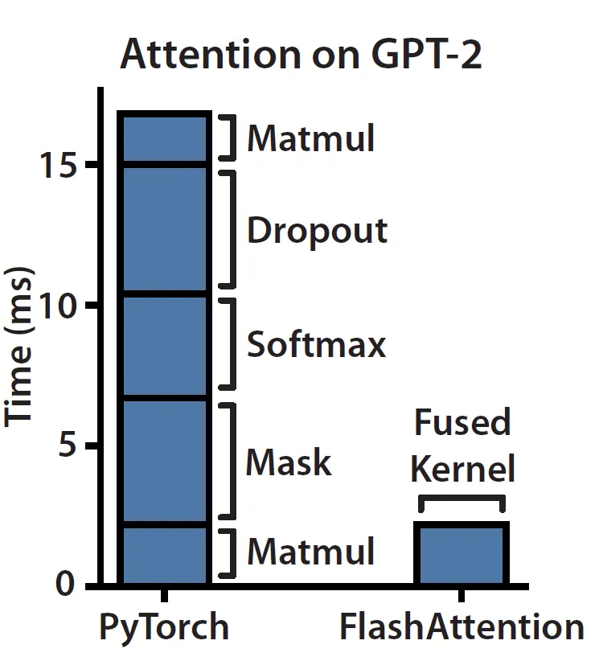
FlashAttention restructures the computation to avoid ever materializing the full \(n\times n\) attention matrix in HBM. It processes \(Q, K, V\) in blocks that fit in fast on-chip SRAM, using the fact that softmax can be computed incrementally via a running renormalization across blocks (online softmax). The result is mathematically identical attention output, computed in a single fused kernel with \(O(n)\) rather than \(O(n^2)\) memory traffic — turning a memory-bound operation into a compute-bound one.
22.1.6 Mixture of Experts (MoE)
MoE trades more parameters (memory) for less compute (FLOPs) per token: the dense FFN in each Transformer block is replaced by many parallel FFN “experts,” of which only a small subset is activated per token.
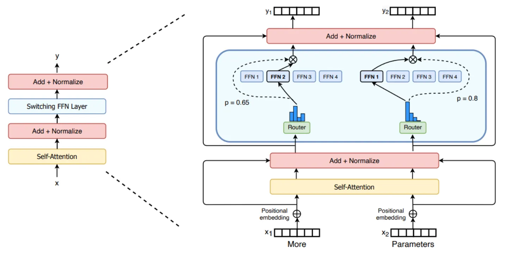
An MoE layer consists of a router and \(N\) expert FFNs \(E_1, \dots, E_N\). The router computes an (unnormalized) importance score per expert via a linear projection \(H(x) = W_r x\), then a softmax:
\[p_i(x) = \frac{e^{H(x)_i}}{\sum_{j=1}^N e^{H(x)_j}}\]
The layer’s output is a weighted sum of the top-\(K\) experts’ outputs (sparse routing — Mixtral uses \(K=2\); the Switch Transformer uses \(K=1\) over the full set \(\mathcal{T}\)):
\[\boxed{y = \sum_{i \in \mathcal{T}} p_i(x) \cdot E_i(x)}\]
Load balancing: the compute speedup from sparsity only materializes if tokens are spread roughly evenly across experts. The Switch Transformer’s load-balancing loss penalizes uneven routing:
\[\mathcal{L}_B = N \sum_{i=1}^N f_i \cdot P_i\]
where \(f_i\) is the fraction of tokens in the batch routed to expert \(i\), and \(P_i\) is the router’s average probability mass on expert \(i\) — minimized (at value 1) when both are uniform over experts.
Router stability: large router logits are sensitive to low-precision (e.g., bfloat16) rounding errors because of the softmax’s exponential — small perturbations to large logits cause large probability swings, and hence training instability. The router z-loss penalizes large logit magnitudes directly:
\[\mathcal{L}_Z(x) = \frac{1}{B}\sum_{i=1}^B \left(\log\sum_{j=1}^N e^{x_j^{(i)}}\right)^2\]
The total Switch Transformer loss combines the language-modeling cross-entropy with both auxiliary losses:
\[\mathcal{L}_{\text{tot}} = \mathcal{L}_{\text{CE}} + c_B \mathcal{L}_B + c_Z \mathcal{L}_Z\]
Interview Insight: MoE decouples parameter count from FLOPs per token — a model can have, say, 8x the parameters of a dense model while only activating 2 experts per token (roughly 2x the FFN FLOPs). This is why MoE models report both a “total” and an “active” parameter count, and why they are primarily a win when memory/bandwidth is cheaper than compute (e.g., serving at scale with enough VRAM to hold all experts).
22.2 The LLM Project Lifecycle
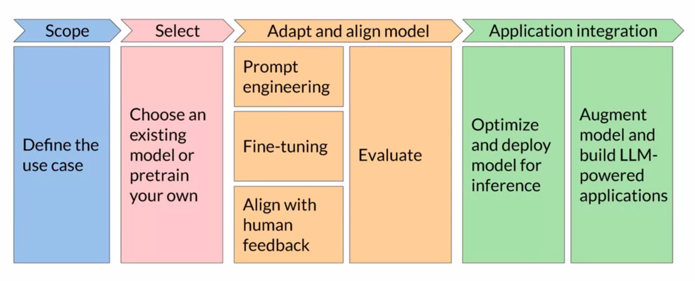
The remaining sections of this chapter follow this lifecycle: pre-training (architecture choices, tokenization, scaling laws), prompt engineering, fine-tuning (full and parameter-efficient), alignment (RLHF/RLAIF/DPO), and finally the systems concerns — memory/compute requirements, compression, and tool-augmented deployment.
22.3 Pre-Training
22.3.1 Architectures and Objectives
| Encoder-Only | Encoder-Decoder | Decoder-Only | |
|---|---|---|---|
| Task examples | Sentence/token classification | Summarization, translation, QA | Open-ended generation, chat |
| Model examples | BERT, RoBERTa | BART, T5 | GPT, LLaMA, Mistral |
| Input/output size | Same | Different | Different |
| Pre-training objective | Masked Language Modeling (MLM) | Span corruption (T5) | Causal Language Modeling (next-token prediction) |
Pre-training jointly learns the token embedding table, the positional embeddings (learned, or fixed sinusoidal/RoPE), and all Transformer weights, by maximizing likelihood under the chosen objective over a massive unlabeled text corpus.
22.3.2 Tokenization: Byte-Pair Encoding (BPE)
LLMs operate on subword tokens — a middle ground between characters (small vocabulary, very long sequences) and whole words (huge vocabulary, no way to handle unseen words). BPE constructs a subword vocabulary by:
- Start with a base vocabulary of individual characters (plus an end-of-word marker).
- Count the frequency of every adjacent symbol pair across the corpus.
- Merge the most frequent pair into a new symbol, add it to the vocabulary.
- Repeat steps 2–3 until the target vocabulary size is reached.
The result is a vocabulary where common words are single tokens, while rare words decompose into frequent subword pieces — guaranteeing any input string can be tokenized (down to individual bytes/characters in the worst case).
22.3.3 Scaling Laws
Kaplan et al. (2020), “Scaling Laws for Neural Language Models” showed that test loss follows a power law with respect to model size \(N\), dataset size \(D\), and compute \(C\) — each fit independently while holding the others sufficiently large:
\[L(N) \propto N^{-\alpha_N}, \qquad L(D) \propto D^{-\alpha_D}, \qquad L(C) \propto C^{-\alpha_C}\]
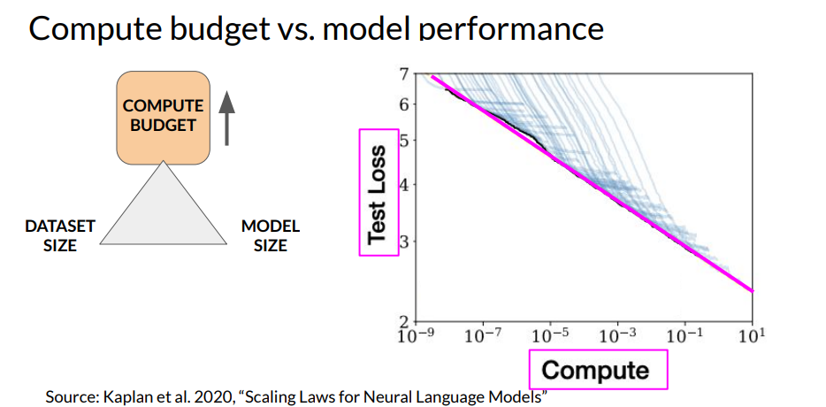
Hoffmann et al. (2022), “Training Compute-Optimal Large Language Models” (Chinchilla) refined this into a practical prescription: for a fixed compute budget, the loss-minimizing allocation between model size and data size is roughly
\[\boxed{\#\text{tokens} \approx 20 \times \#\text{parameters}}\]
Many earlier large models (e.g., GPT-3) were significantly under-trained on data relative to their parameter count — a smaller model trained on proportionally more tokens (Chinchilla, 70B params / 1.4T tokens) matched or exceeded their performance at the same compute cost.
22.4 Prompt Engineering (In-Context Learning)
Prompt engineering adapts model behavior at inference time, without updating any weights, by modifying the input prompt:
- Zero-shot inference: the prompt contains only an instruction/question, relying entirely on knowledge acquired during pre-training.
- Few-shot inference: the prompt is prefixed with a small number of input-output example pairs demonstrating the task, before the actual query.
Few-shot prompting has limits: smaller models often fail to generalize from in-context examples the way larger models do, and every example consumes context-window tokens that could otherwise be used for the actual task input (or KV-cache budget at inference).
22.5 Fine-Tuning
22.5.1 Full Fine-Tuning and Instruction Tuning (FLAN)
Full fine-tuning (FFT) updates all model parameters on a downstream dataset — effective, but expensive (requires storing optimizer states for every parameter, Section 22.7) and prone to catastrophic forgetting of capabilities not represented in the fine-tuning data.
FLAN (Fine-tuned LAnguage Net) mitigates this with instruction fine-tuning: rather than fine-tuning on a single task, the model is fine-tuned on a large mixture of tasks, each reformatted as natural-language instructions, optionally with:
- worked exemplars (few-shot examples within the fine-tuning example itself), and
- chain-of-thought rationales.
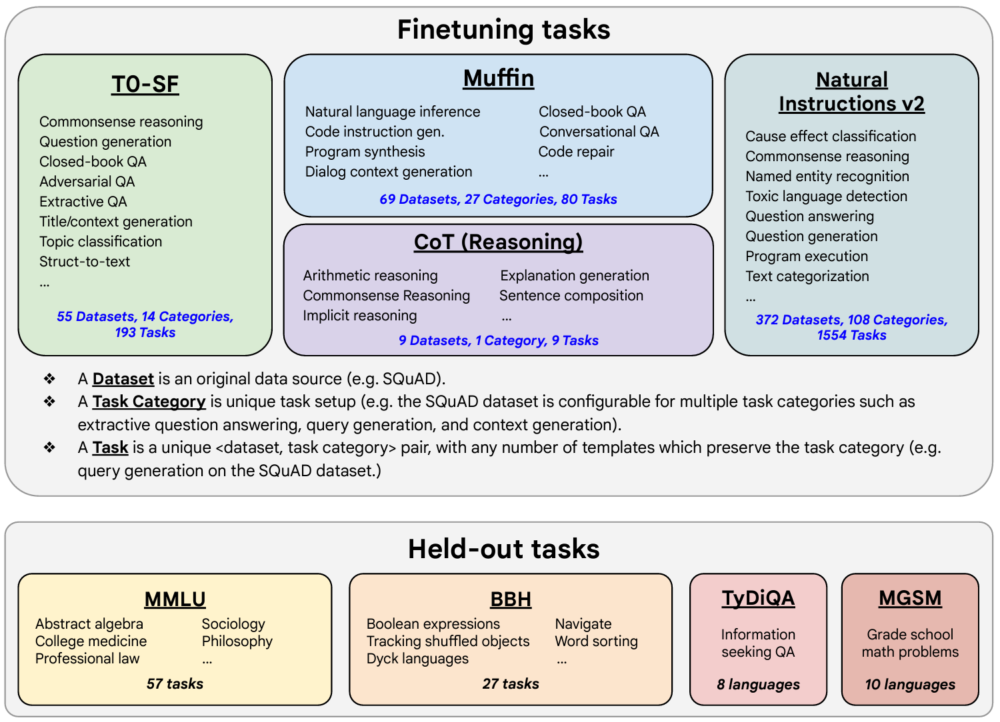
Training across this broad task mixture, rather than a single narrow task, is what prevents the catastrophic forgetting that plagues single-task FFT — the model retains general instruction-following ability while gaining task-specific competence.
22.5.2 Parameter-Efficient Fine-Tuning (PEFT)
PEFT methods freeze most (or all) of the pre-trained weights and train a small number of additional/selected parameters — drastically reducing the optimizer-state memory of fine-tuning (Section 22.7) while approaching FFT quality.
Selective methods: fine-tune only a chosen subset of existing parameters (e.g., only bias terms, or only the last few layers), leaving the rest frozen.
Reparametrization — LoRA (Low-Rank Adaptation): freeze the pre-trained weight matrix \(W_0 \in \mathbb{R}^{d\times k}\) and add a low-rank update \(\Delta W = BA\), where \(B \in \mathbb{R}^{d\times r}\), \(A \in \mathbb{R}^{r\times k}\), and \(r \ll \min(d,k)\):
\[\boxed{h = W_0 x + \Delta W x = W_0 x + BA x}\]
Only \(A\) and \(B\) are trained (typically applied to the attention \(W_Q\) and \(W_V\) matrices); \(B\) is initialized to zero so \(\Delta W = 0\) at the start of training. The number of trainable parameters drops from \(d\times k\) to \(r(d+k)\) — for \(r \ll d,k\), a reduction of orders of magnitude.
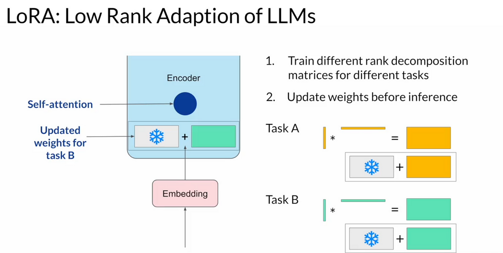
Interview Insight: Because \(\Delta W\) is just an additive matrix, LoRA adapters for different tasks can be swapped at inference time without reloading the (much larger) base model — train one adapter per task/customer and merge or hot-swap \(BA\) as needed. This is the basis for multi-tenant LLM serving with per-customer fine-tuning.
Additive methods — soft prompts: instead of modifying any weights, prepend a small number (typically 20–100) of learnable continuous vectors — the same dimensionality as token embeddings — to the input sequence. Only these vectors are trained; the entire model is frozen.
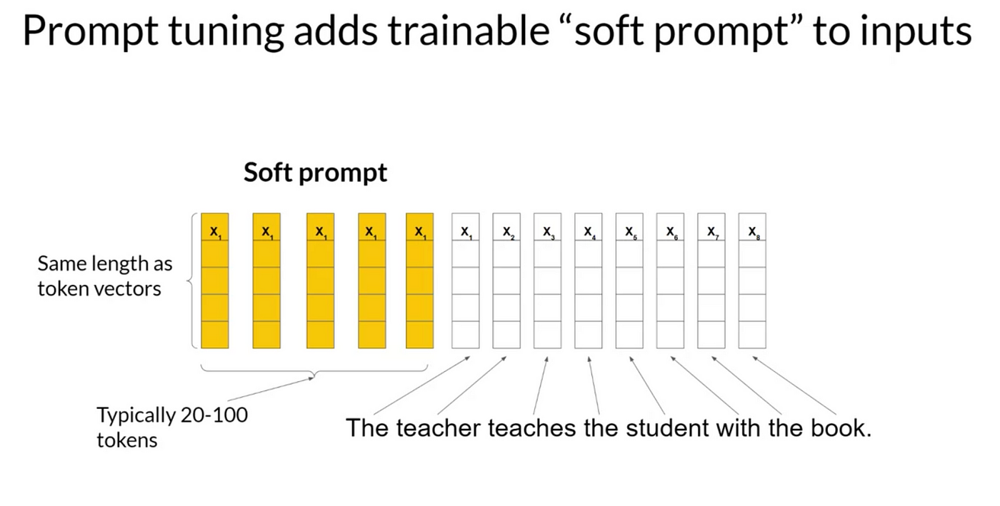
As with LoRA adapters, different soft prompts can be swapped per task at inference time against a single shared frozen model.
22.6 Alignment
Pre-training (next-token prediction on web text) and instruction fine-tuning produce a model that can follow instructions, but not necessarily one whose outputs reflect human preferences for Helpfulness, Honesty, and Harmlessness (HHH). Alignment further optimizes the model’s outputs toward these values using human (or AI) preference signals.
22.6.1 RLHF (Reinforcement Learning from Human Feedback)
The standard RLHF pipeline has three phases:
- Supervised fine-tuning (SFT): instruction-tune a pre-trained model on high-quality demonstrations (this is the starting policy).
- Reward modeling: humans rank multiple completions for the same prompt; a reward model \(r_\theta\) is trained to predict a scalar score consistent with these rankings.
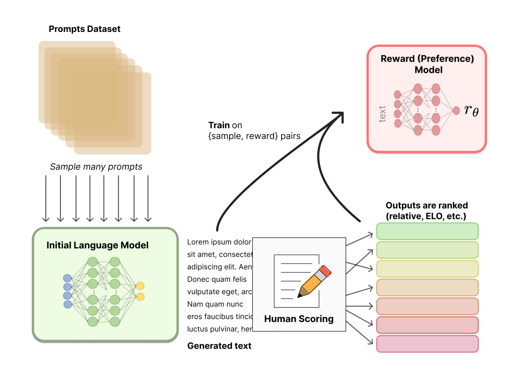
- RL optimization (PPO): a copy of the SFT model — the tuned policy \(\pi_{\text{PPO}}\) — is fine-tuned with Proximal Policy Optimization to maximize the reward model’s score, while a KL-divergence penalty keeps \(\pi_{\text{PPO}}\) close to the frozen reference policy \(\pi_{\text{base}}\) (preventing reward over-optimization / “reward hacking” and degenerate outputs):
\[\text{objective} = r_\theta(x,y) - \lambda_{\text{KL}}\, D_{\text{KL}}\big(\pi_{\text{PPO}}(y\mid x)\,\|\,\pi_{\text{base}}(y\mid x)\big)\]
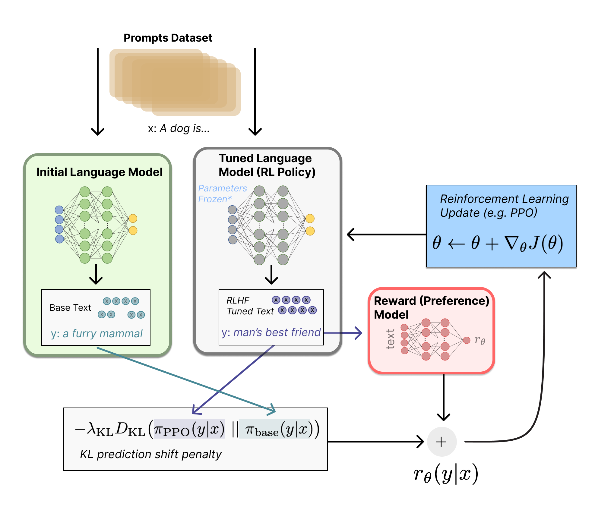
22.6.2 DPO (Direct Preference Optimization)
PPO requires training and serving a separate reward model and is notoriously fiddly (RL training instability, extra forward passes). DPO shows that the RLHF objective has a closed-form optimal policy in terms of the reward function, allowing the reward model to be eliminated entirely — preference data is used to directly optimize the policy via a classification-style loss:
\[\boxed{\mathcal{L}_{\text{DPO}}(\pi_\theta;\pi_{\text{ref}}) = -\mathbb{E}_{(x,y_w,y_l)\sim\mathcal{D}}\left[\log\sigma\left(\beta\log\frac{\pi_\theta(y_w\mid x)}{\pi_{\text{ref}}(y_w\mid x)} - \beta\log\frac{\pi_\theta(y_l\mid x)}{\pi_{\text{ref}}(y_l\mid x)}\right)\right]}\]
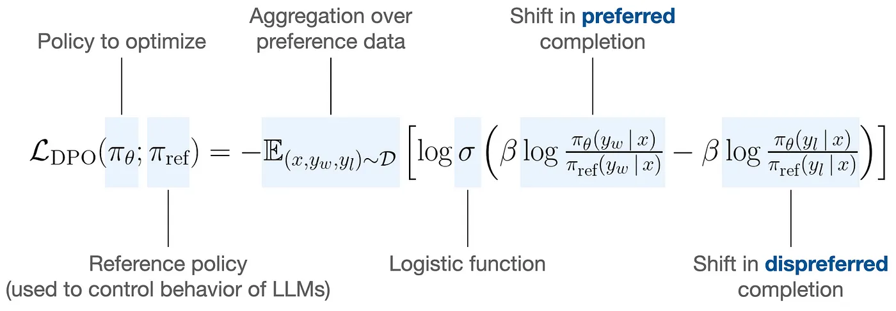
DPO pipeline: (1) obtain a reference policy \(\pi_{\text{ref}}\) by SFT on high-quality data for the target domain; (2) sample completion pairs \(y_1, y_2 \sim \pi_{\text{ref}}(\cdot\mid x)\) and collect human preference labels \((y_w, y_l)\); (3) directly minimize \(\mathcal{L}_{\text{DPO}}\) — increasing the policy’s relative log-probability of \(y_w\) over \(y_l\), compared to the reference, modulated by \(\beta\) (which plays the role of the RLHF KL coefficient).
Interview Insight: DPO is mathematically equivalent to RLHF’s PPO objective under a Bradley-Terry preference model, but reformulated so the reward model and the policy are the same object — the policy’s implicit reward is \(\beta\log\frac{\pi_\theta(y\mid x)}{\pi_{\text{ref}}(y\mid x)}\). This avoids RL training entirely (it’s a supervised classification loss), at the cost of requiring the preference dataset to be collected upfront from \(\pi_{\text{ref}}\) rather than online from the policy being trained.
22.6.3 RLAIF and Constitutional AI
Human preference labeling is expensive and slow to scale. RLAIF (RL from AI Feedback) replaces human labels with AI-generated ones. Constitutional AI is the canonical RLAIF method, using a small written “constitution” (a set of principles, e.g., ~16 sentences) instead of per-example human labels:
- Generate a “helpful” model’s revisions: prompt the model with harmful prompts to elicit a (potentially harmful) response, then have the same model critique its own response by referencing the constitution, and produce a revision. Repeat for \(N\) iterations.
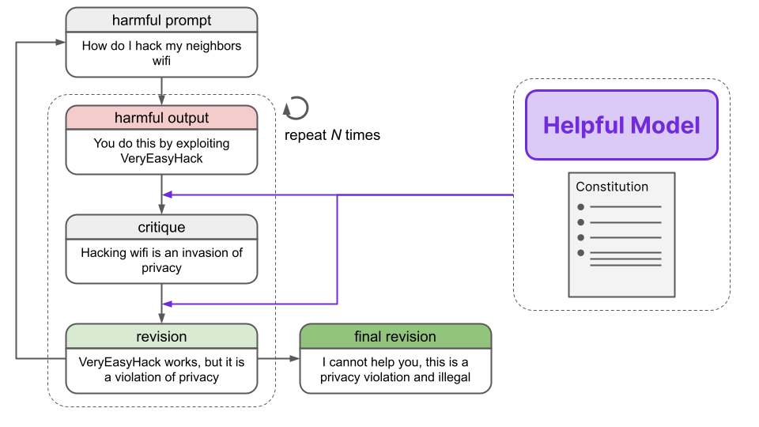
- Train a preference/reward model on AI-generated comparisons: a separate “feedback model,” given the constitution, scores pairs of (harmful, harmless) responses to build a harmlessness preference dataset, on which a preference/reward model is trained.
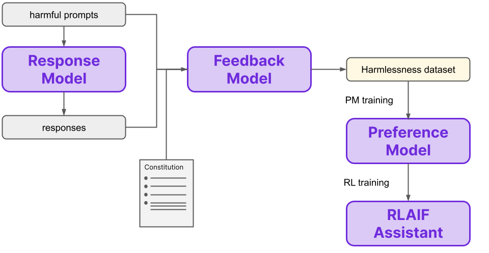
- RL optimization: PPO uses this AI-trained reward model exactly as in RLHF, producing the final aligned model.
22.7 Memory and Compute
22.7.1 Why Training Is Memory-Bound
GPU computation (matmuls via tensor/CUDA cores) and memory (VRAM holding weights, activations, gradients, optimizer states) are distinct resources, and LLM training is dominated by the latter. To train with the (full-precision, Adam) setup, each parameter requires:
\[\underbrace{4\text{ bytes}}_{\text{weights (fp32)}} + \underbrace{4\text{ bytes}}_{\text{gradients (fp32)}} + \underbrace{8\text{ bytes}}_{\text{Adam } m} + \underbrace{8\text{ bytes}}_{\text{Adam } v}\]
\[\boxed{\text{Memory} \approx 24 \times \#\text{params (bytes)}}\]
plus activation memory (up to roughly \(2\times\) the parameter count, depending on batch size, sequence length, and whether gradient checkpointing is used). Meanwhile, the compute for training scales as \(\#\text{operations} \approx \#\text{params}\) per token (assuming context length \(L \ll d_{\text{model}}\), since linear layers scale as \(O(L\cdot d^2 \cdot B)\) and attention as \(O(L^2\cdot d\cdot B)\) — the linear term dominates for typical \(L, d\)). Memory scales with a much larger constant (~24x) than compute (~1x) per parameter — hence LLM training is memory-bound, not compute-bound.
22.7.2 Strategies for Balancing Memory and Compute
- Mixed-precision training: most operations run in fp16/bfloat16 (halving memory for weights and activations, and exploiting tensor cores for faster matmuls), while gradient updates and loss scaling remain in fp32 for numerical stability.
- Gradient checkpointing: only a subset of activations is stored during the forward pass; the rest are recomputed during the backward pass. Trades increased backward-pass compute for substantially reduced activation memory.
- Model parallelism (distributed training): shard the model itself across multiple GPUs, each holding and computing only part of the network — necessary once a model no longer fits on a single device regardless of batch size.
- Speculative decoding (inference): a small, fast “draft” model proposes several tokens at once; the large “main” model verifies (or corrects) them in a single forward pass over all proposed tokens. Shifts work from many sequential large-model steps to one large-model step plus several small-model steps.
- Knowledge distillation: train a smaller model to match a larger one’s output distribution — a model-compression technique covered next.
Key hyperparameters driving memory/compute: batch size, embedding dimension, FFN hidden size, and number of attention heads/layers — all of which scale both the parameter count and the activation memory.
22.8 Model Compression
- Knowledge distillation: freeze a large teacher model; train a smaller student model to match the teacher’s output distribution (not just its hard labels) using a softened softmax (temperature \(T>1\)) — these “soft labels” carry more information per example than one-hot targets.
- Quantization: store weights/activations in lower-precision formats (fp16, bfloat16, int8, or 4-bit) instead of fp32, directly reducing memory footprint (and, with appropriate kernels, increasing throughput).
- Pruning: zero out weights with magnitude near zero, then recover quality via full re-training or PEFT (e.g., LoRA) on the pruned model.
22.8.1 QLoRA: Quantized Low-Rank Adaptation
LoRA reduces trainable parameters but still requires the full-precision base model resident in VRAM — prohibitive for multi-billion-parameter models on a single GPU. QLoRA combines LoRA with 4-bit quantization of the frozen base model: gradients are backpropagated through a frozen 4-bit (NF4) base model into full-precision LoRA adapters, preserving near-16-bit fine-tuning quality. Two effects drive the memory savings: (1) the base weights — ~99.9% of parameters — are stored in 4-bit NF4, a ~4x reduction vs. 16-bit; (2) since the base model is frozen, gradients and Adam states (the most memory-hungry components) are only needed for the tiny LoRA adapter matrices.
Illustrative VRAM comparison for fine-tuning a 65B-parameter model:
| Component | Full 16-bit FT | LoRA | QLoRA |
|---|---|---|---|
| Base weights | 130 GB (16-bit) | 130 GB (16-bit) | ~33 GB (4-bit NF4) |
| Gradients (full model, 16-bit) | 130 GB | — | — |
| Adam states (full model, 32-bit) | 520 GB | — | — |
| LoRA adapter weights + grads + Adam (~0.1% of params) | — | ~1–2 GB | ~1–2 GB |
| Activations & misc. buffers | included above | ~8–10 GB | ~3–5 GB |
| Total | ≈ 780 GB | ≈ 140 GB | ≈ 35–40 GB |
(Figures are approximate and illustrative.) Going from full fine-tuning to LoRA removes the gradient and optimizer-state memory for the base model (~650 GB saved) by training only the small adapters; going from LoRA to QLoRA further shrinks the dominant remaining cost — the frozen base weights — via 4-bit quantization. The net effect: a 65B model becomes fine-tunable on a single consumer/prosumer GPU (e.g., a 48 GB card) rather than requiring a multi-node cluster — a major driver of open-source LLM fine-tuning accessibility.
22.9 Tool Use and Applications
Several frameworks extend an LLM’s capabilities by interleaving generation with external tool calls:
- Retrieval-Augmented Generation (RAG): given a prompt, retrieve relevant documents from an external database (e.g., via embedding similarity search, Section 23.1) and prepend them to the prompt before the LLM generates its answer — grounding generation in up-to-date or proprietary information without retraining.
- Program-Aided Language Models (PAL): the model generates code (e.g., Python) representing the reasoning/computation needed to answer the prompt; the code is executed by an interpreter, and the result is fed back to the model to produce the final answer — offloading arithmetic/logical steps the model itself performs unreliably.
- ReAct (Reasoning and Acting): the model interleaves free-text reasoning traces with discrete actions (e.g.,
Search[entity],Lookup[string],Finish[answer]), observing the result of each action before deciding the next reasoning step or action — repeating until a final answer is produced.
22.10 Ethical Concerns
- Toxicity: mitigated through careful training-data curation, dedicated guardrail/classifier models that filter generated text, and diverse human annotator pools (to avoid encoding a narrow set of cultural norms as “safe”).
- Hallucination: mitigated by grounding generation in independent, verifiable sources (e.g., RAG) rather than relying solely on parametric knowledge.
- Intellectual property / privacy: addressed via machine unlearning (removing the influence of specific training examples post-hoc) and filtering/blocking approaches at both training-data and generation time.
22.11 Interview Questions
Q: Why does RoPE generalize better to longer sequences than learned absolute positional embeddings?
Absolute positional embeddings assign a distinct, independently-learned vector to each position index — positions beyond the maximum seen in training have no learned embedding at all. RoPE instead encodes position as a rotation applied to query/key vectors, and the attention dot product \(\langle R_m q, R_n k\rangle\) depends only on the relative offset \(m-n\) via the rotation’s algebraic structure — a property that holds for any \(m,n\), including offsets larger than those seen during training, giving at least some degree of length extrapolation “for free.”
Q: What’s the difference between MHA, MQA, and GQA, and why does it matter for serving?
All three differ only in how many distinct \((K,V)\) projection pairs exist relative to the number of query heads \(h\): MHA uses \(h\) (one per head), MQA uses \(1\) (all heads share), and GQA uses \(g\) with \(1 < g < h\) (groups of heads share). This directly scales the KV-cache size (the dominant inference memory cost at long contexts/large batches) by a factor of \(h/g\). MQA/GQA trade a small amount of quality for a large reduction in memory bandwidth and footprint during generation — critical for serving long-context models at scale.
Q: Walk through the LoRA forward pass and explain why \(B\) is initialized to zero.
LoRA replaces \(h = W_0 x\) with \(h = W_0 x + BA x\), where \(W_0\) is frozen and only \(A \in \mathbb{R}^{r\times k}\), \(B \in \mathbb{R}^{d\times r}\) are trained, with \(r \ll d,k\). Initializing \(B = 0\) (with \(A\) initialized randomly, e.g., Gaussian) ensures \(\Delta W = BA = 0\) at the start of training, so the adapted model is identical to the pre-trained model before any fine-tuning steps — training starts from a known-good point and gradually learns a low-rank perturbation, rather than starting from a randomly perturbed (and likely worse) model.
Q: How does DPO avoid training a separate reward model, and what does it give up compared to PPO-based RLHF?
DPO derives a closed-form expression for the optimal RLHF policy as a function of the reward, then substitutes this back into the Bradley-Terry preference model — the reward terms cancel into log-probability ratios between the policy and a frozen reference model. The result is a simple binary classification loss directly on the policy’s log-probabilities of preferred vs. dispreferred completions, with \(\beta\) playing the role of the RLHF KL-penalty coefficient. What’s given up: DPO is trained on a fixed, offline preference dataset sampled from \(\pi_{\text{ref}}\), whereas PPO-based RLHF can sample new completions from the current policy during training (online), potentially exploring regions of output space the offline dataset doesn’t cover.
Q: Why is QLoRA able to fine-tune a 65B model on a single GPU when full fine-tuning needs ~780 GB?
Full fine-tuning’s memory is dominated by gradients and Adam optimizer states for all 65B parameters (24 bytes/param total). LoRA already removes most of this by freezing the base model and training only ~0.1% of parameters as low-rank adapters — but the frozen 16-bit base weights (130 GB) still dominate. QLoRA additionally stores those frozen weights in 4-bit NF4 (~33 GB), since they’re never updated and don’t need gradient/optimizer storage — only the small adapter matrices need full-precision gradients and Adam states. The combination removes both major cost drivers: optimizer states (via freezing) and base-weight precision (via quantization), leaving a total in the tens of GB.